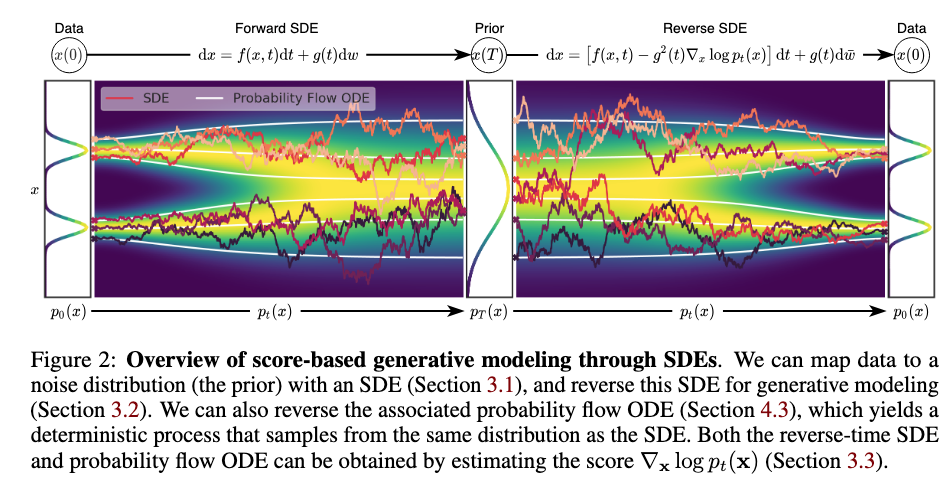
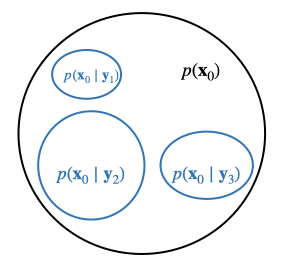

Score-based Diffusion Models
Useful links
- Score-Based Generative Modeling through Stochastic Differential Equations - by Yang Song et al
- The Principles of Diffusion Models - by Chieh-Hsin Lai et al
- Generative Modeling by Estimating Gradients of the Data Distribution - by Yang Song
- Score-based Diffusion Models | Generative AI Animated - by Deepia
- Diffusion Posterior Sampling for General Noisy Inverse Problems - by Hyungjin Chung et al
Introduction

Physics
Forward SDE: (stochastic) \[ \mathrm{d} \mathbf{x}_t = \mathbf{f}(\mathbf{x}_t, t) \mathrm{d} t + g(t) \mathrm{d} \mathbf{w}_t \] Reverse SDE: (stochastic) \[ \mathrm{d} \mathbf{x}_t = \left[ \mathbf{f}(\mathbf{x}_t, t) - g(t)^2 \textcolor{red}{\nabla_{\mathbf{x}_t} \log p_t(\mathbf{x}_t)} \right] \mathrm{d} t + g(t) \mathrm{d} \mathbf{\bar{w}}_t \] The corresponding probability flow ODE: (deterministic) \[ \mathrm{d} \mathbf{x}_t = \left[ \mathbf{f}(\mathbf{x}_t, t) - \frac{1}{2}g(t)^2 \textcolor{red}{\nabla_{\mathbf{x}_t} \log p_t(\mathbf{x}_t)} \right] \mathrm{d} t \]
Corresponding means the probability flow ODE is designed to share the same marginal distribution $\{p_t(\mathbf{x}_t)\}_{t=0}^T$ as the SDE. Notably, there is a factor $\frac{1}{2}$.
Notations
- $\mathbf{f}(\cdot, t): \mathbb{R}^d \to \mathbb{R}^d$ is the drift coefficient of $\mathbf{x}_t \in \mathbb{R}^d$, deterministic
If it is linear in $\mathbf{x}_t$, it is often written as $\mathbf{f}(\mathbf{x}_t, t) = f(t)\mathbf{x}_t$ with $f(t): \mathbb{R} \to \mathbb{R}$ (usually in Variance Preserving (VP) SDEs). Same for the reverse SDE. This is an important point in score training.
- $g(\cdot): \mathbb{R} \to \mathbb{R}$ is the diffusion coefficient, deterministic, controls how much randomness is added
- $\{\mathbf{w}_t\}_{t=0}^T$: standard Wiener process, represents the integral of white Gaussian noise
- $\mathrm{d}\mathbf{w}_t$: infinitesimal white (Gaussian) noise $\mathcal{N}(\mathbf{0}, \mathrm{d}t \mathbf{I})$
- $\{\bar{\mathbf{w}}_t\}_{t=T}^0$: standard Wiener process in the reverse-time direction. The $\mathrm{d} t$ is an infinitesimal negative time step in the reverse SDE.
The forward process is known and designed. The generation process is based on the reverse SDE, but we don't know the score function in this reverse SDE. So we need to utilize the forward SDE to train a UNet $\mathbf{s}_{\boldsymbol{\phi}}(\mathbf{x}_t, t)$ to predict the score function at each diffusion step, such that we are able to use the reverse process to generate new images.
Training
To predict the score function at each diffusion step, with a UNet with parameters $\boldsymbol{\phi}$, the true training objective is \[ \mathop{\mathbb{E}}\limits_{t\sim U(0,T)} \ \mathop{\mathbb{E}}\limits_{\mathbf{x}_t \sim p_t(\mathbf{x}_t)} \left[ \| \mathbf{s}_{\boldsymbol{\phi}}(\mathbf{x}_t, t) - \textcolor{red}{\nabla_{\mathbf{x}_t} \log p_t(\mathbf{x}_t)} \|^2 \right] \] We are not able to train $\mathbf{s}_{\boldsymbol{\phi}}(\mathbf{x}_t, t)$ with this loss function since we don't know $p_t(\mathbf{x}_t)$ (and its score is what we want to estimate!). The magic is to use a conditional trick. Finding the optimal $\boldsymbol{\phi}^*$ is equivalent to minimizing the following loss, \[ \mathop{\mathbb{E}}\limits_{t\sim U(0,T)} \ \mathop{\mathbb{E}}\limits_{\mathbf{x}_0 \sim p_0(\mathbf{x}_0)} \ \mathop{\mathbb{E}}\limits_{\mathbf{x}_t \sim p_{0t}(\mathbf{x}_t | \mathbf{x}_0)} \left[ \| \mathbf{s}_{\boldsymbol{\phi}}(\mathbf{x}_t, t) - \textcolor{Green}{\nabla_{\mathbf{x}_t} \log p_{0t}(\mathbf{x}_t | \mathbf{x}_0)} \|^2 \right] \] The two losses are not identical, but they give the same optimal $\boldsymbol{\phi}^*$.
When we design function $\mathbf{f}(\mathbf{x}_t, t)$ to be linear in $\mathbf{x}_t$ as $\mathbf{f}(\mathbf{x}_t, t) = f(t) \mathbf{x}_t$, we have $\textcolor{Green}{p_{0t}(\mathbf{x}_t | \mathbf{x}_0)}$ to be Gaussian with closed form, then the objective function becomes tractable.
In general, let this known Gaussian distribution be $\mathcal{N}(\mathbf{x}_t; \ \mu_t\mathbf{x}_0, \textcolor{Green}{\gamma_t^2}\mathbf{I})$, functions $\mu(t)$ and $\textcolor{Green}{\gamma(t)}$ can be derived from function $f(t)$ and $g(t)$. The score function can be calculated in closed-form as $\textcolor{Green}{\nabla_{\mathbf{x}_t} \log p_{0t} (\mathbf{x}_t | \mathbf{x}_0)} =-\frac{\mathbf{x}_t - \mu_t \mathbf{x}_0}{\textcolor{Green}{\gamma_t^2}}$. The training objective becomes $$ \begin{aligned} &\mathop{\mathbb{E}}\limits_{t\sim U(0,T)} \ \mathop{\mathbb{E}}\limits_{\mathbf{x}_0 \sim p_0(\mathbf{x}_0)} \ \mathop{\mathbb{E}}\limits_{\mathbf{x}_t \sim p_{0t}(\mathbf{x}_t | \mathbf{x}_0)} \left[ \left\| \mathbf{s}_{\boldsymbol{\phi}}(\mathbf{x}_t, t) + \frac{\mathbf{x}_t - \mu_t \mathbf{x}_0}{\textcolor{Green}{\gamma_t^2}} \right\|^2 \right] \\ = &\mathop{\mathbb{E}}\limits_{t\sim U(0,T)} \ \mathop{\mathbb{E}}\limits_{\mathbf{x}_0 \sim p_0(\mathbf{x}_0)} \ \mathop{\mathbb{E}}\limits_{\boldsymbol{\epsilon}\sim \mathcal{N}(\mathbf{0}, \mathbf{I})} \left[\left\|\mathbf{s}_{\boldsymbol{\phi}}(\mathbf{x}_t, t)+ \frac{\boldsymbol{\epsilon}}{\textcolor{Green}{\gamma_t}} \right\|_2^2\right] \end{aligned} $$ $$ \text{with}\ \mathbf{x}_t = \mu_t \mathbf{x}_0+\textcolor{Green}{\gamma_t} \cdot\boldsymbol{\epsilon} $$ If we choose the weighting $\lambda(t) = \textcolor{Green}{\gamma_t^2}$, the training objective becomes $$ \mathop{\mathbb{E}}\limits_{t\sim U(0,T)} \ \mathop{\mathbb{E}}\limits_{\mathbf{x}_0 \sim p_0(\mathbf{x}_0)} \ \mathop{\mathbb{E}}\limits_{\boldsymbol{\epsilon}\sim \mathcal{N}(\mathbf{0}, \mathbf{I})} \left[\left\|\mathbf{s}_{\boldsymbol{\phi}}(\mathbf{x}_t, t) \cdot \textcolor{Green}{\gamma_t} + \boldsymbol{\epsilon} \right\|_2^2\right] $$ which has the same per-timestep optimum but changes the relative importance of different time steps (across noise levels).
Similar to DDPM, with SGD (stochastic gradient descent), the loss function in each iteration is,
In each iteration, we pick an image $\tilde{\mathbf{x}}_0$ from the training set, a noise value $\tilde{\boldsymbol{\epsilon}}$, and a time value $\tilde{t}$.
Then calculate the loss for this single sample,
\[
\mathcal{L} =
\left\| \mathbf{s}_{\boldsymbol{\phi}}(\tilde{\mathbf{x}}_{\tilde{t}}, \tilde{t})\cdot\textcolor{Green}{\gamma_{\tilde{t}}} + \tilde{\boldsymbol{\epsilon}} \right\|^2
\]
The UNet parameters $\boldsymbol{\phi}$ are updated by one gradient step downhill [Ho et al. 2020].
- repeat
- Sample an image $\tilde{\mathbf{x}}_0$ from the training set $\mathcal{D}$
- Sample a time step $\tilde{t}$ uniformly from $\{1, \ldots, T\}$
- Sample a noise $\tilde{\boldsymbol{\epsilon}}$ from Gaussian distribution $\mathcal{N}(\mathbf{0}, \mathbf{I})$
- Calculate the gradient $\nabla_\phi \left\| \mathbf{s}_{\boldsymbol{\phi}}(\tilde{\mathbf{x}}_{\tilde{t}}, \tilde{t})\cdot\textcolor{Green}{\gamma_{\tilde{t}}} + \tilde{\boldsymbol{\epsilon}} \right\|^2$
- Take a step against the gradient's direction
- until converged
Key points of training:
- We don't know $p_t(\mathbf{x}_t)$, and we don't know the score $\textcolor{red}{\nabla_{\mathbf{x}_t} \log p_t(\mathbf{x}_t)}$.
- We need to train a network to approximate the score $\textcolor{red}{\nabla_{\mathbf{x}_t} \log p_t(\mathbf{x}_t)}$.
- The training loss is derived based on the facts that
- We can equivalently write the loss with $\textcolor{Green}{\nabla_{\mathbf{x}_t} \log p_{0t}(\mathbf{x}_t | \mathbf{x}_0)}$
- We can analytically derive $\textcolor{Green}{\nabla_{\mathbf{x}_t} \log p_{0t}(\mathbf{x}_t | \mathbf{x}_0)}$
Connection to DDPM and noise predictor
In DDPM we defined the discrete-time kernels
$$
\mathbf{x}_t
:= \sqrt{1-\beta_t} \cdot \mathbf{x}_{t-1}+ \sqrt{\beta_t} \cdot \boldsymbol{\epsilon} $$
and we can derive
$$
\textcolor{Green}{p_{0t}(\mathbf{x}_t | \mathbf{x}_0)}
=\mathcal{N} \left(\mathbf{x}_t ; \sqrt{\bar{\alpha}_t}\cdot \mathbf{x}_0 , \ (1-\bar{\alpha}_t) \mathbf{I} \right)
$$
In the continuous-time SDE formulation, DDPM is equivalent to a VP-SDE with
$$
\mathrm{d} \mathbf{x}_t=-\frac{1}{2} \beta(t) \mathbf{x}_t \mathrm{d} t+\sqrt{\beta(t)} \mathrm{d} \mathbf{w}_t .
$$
and we can derive
$$
\textcolor{Green}{p_{0t}(\mathbf{x}_t | \mathbf{x}_0)}
= \mathcal{N}\bigl(\mathbf{x}_t; \mu(t)\mathbf{x}_0, \textcolor{Green}{\gamma(t)^2} \mathbf{I}\bigr),
\quad
\text{with}
\
\mu(t) = e^{-\frac{1}{2} \int_0^t \beta(s) \mathrm{d} s},
\quad \textcolor{Green}{\gamma(t)} = \sqrt{1-e^{-\int_0^t \beta(s) \mathrm{d} s}}
$$
The discrete and continuous formulations are consistent through
$$
\sqrt{\bar{\alpha}_t} \approx \mu(t), \quad \sqrt{1-\bar{\alpha}_t} \approx \gamma(t)
$$
This follows from the $\log \left(1-\beta_s\right) \approx-\beta_s$ when $\beta_s$ is small.
Compare the training loss with DDPM we can observe that,
a score predictor and a noise predictor are equivalent, only with a difference in a scaling factor as
$$
\textcolor{red}{\mathbf{s}_{\phi^*}(\mathbf{x}_t, t)} =
\textcolor{Green}{-\frac{1}{\sqrt{1-\bar{\alpha}_t}}} \boldsymbol{\epsilon}_{\mathbf{\theta}^*}\left(\mathbf{x}_t, t\right)
= \textcolor{Green}{- \frac{1}{\gamma_t}} \boldsymbol{\epsilon}_{\mathbf{\theta}^*}\left(\mathbf{x}_t, t\right)
$$
Therefore the choice of predictors is not a fundamental modeling difference but only a implementation difference and can be used (mostly) interchangeably.
Taking into account of the scaling factor, the above training loss for score predictor is equivalent to the training loss for noise predictor in DDPM.
Sampling
After training, we have the $\textcolor{red}{\mathbf{s}_{\boldsymbol{\phi}^*}(\mathbf{x}_t, t)}$. Thus, we have the following known reverse process and we can use it to generate new images. $$ \mathrm{d} \mathbf{x}_t=\left[\mathbf{f}(\mathbf{x}_t, t)-g(t)^2 \color{red}\mathbf{s}_{\boldsymbol{\phi}^*}(\mathbf{x}_t, t)\right] \mathrm{d} t+g(t) \mathrm{d} \overline{\mathbf{w}}_t $$ The most simple one is the Euler-Maruyama method.
- Initialize $t \leftarrow T$ and iterate until $t \approx 0$ ($t$ here acts as an iteration parameter, not a random variable or a realization)
- Let $\mathrm{d} \mathbf{x} = \mathbf{x}_{t+\Delta t}-\mathbf{x}_t$, $\mathrm{d}t= |\Delta t|$, $\mathrm{d} \mathbf{\bar{w}}_t = \sqrt{|\Delta t|} \cdot \boldsymbol{\epsilon}_t$ with sample $\boldsymbol{\epsilon}_t \sim \mathcal{N}(\mathbf{0}, \mathbf{I})$. Note that $\Delta t < 0$. Then $$ \mathbf{x}_{t+\Delta t} = \underbrace{ \mathbf{x}_t + \left[\mathbf{f}(\mathbf{x}_t, t) - g(t)^2 \color{red}\mathbf{s}_{\boldsymbol{\phi}^*}(\mathbf{x}_t, t)\right] \Delta t }_{\color{red}\text{mean}} + \underbrace{ g(t)\sqrt{|\Delta t|} \cdot \boldsymbol{\epsilon}_t }_{\color{NavyBlue}\text{randomness}} $$
- This discretization step is a tractable approximation of the posterior $p(\mathbf{x}_{t+\Delta t} \mid \mathbf{x}_{t})$ with $\Delta t < 0$. The process is equivalent to sampling from this distribution, which is Gaussian $p(\mathbf{x}_{t+\Delta t} \mid \mathbf{x}_{t}) =\mathcal{N}( \mathbf{x}_{t+\Delta t}\ ;\textcolor{red}{\text{mean}},\ g(t)^2 |\Delta t| \mathbf{I})$.
For a VP-SDE like DDPM, the intial image is sampled from $\mathcal{N}(\mathbf{0}, \mathbf{I})$ at $t=T$. For a typical-schedule VE-SDE with $\sigma_{\min }=\sigma_1<\sigma_2<\cdots<\sigma_N=\sigma_{\max }$, the initial image is sampled from $\mathcal{N}(\mathbf{0}, \sigma_{\max }^2 \mathbf{I})$ at $t=T$.
Inverse Problem Solving
With this score-based SDE framework, we are able to solve inverse problems with diffusion prior with only modification in the sampling process.
Assume that we know the forward physical model $\mathbf{y} = \mathcal{A}(\mathbf{x}_0) + \boldsymbol{\epsilon}$, where $\mathcal{A}(\cdot)$ is a known operator, $\mathbf{x}_0$ is the ground-truth clean image, and $\boldsymbol{\epsilon}$ is the noise. We want to solve the inverse problem by sampling from the posterior distribution $p(\mathbf{x}_0 \mid \mathbf{y})$.
Conditional Generation to Solving Inverse Problems

Inverse problem solving can be viewed as a special case of conditional generation, since in both case we are generating images based on some given conditions $\mathbf{y}$.
The simliest example might be, if an unconditional generative model can generate animals, then the conditional generative model can generate dogs controlled by the given label $\mathbf{y}=\text{"dog"}$.
To solve inverse problem, the reconstruction image is then generated by the pre-trained unconditional generative model being controlled by the given measurement $\mathbf{y}$.
Modifications of sampling process
Unconditional generation:
$$
\mathrm{d} \mathbf{x}_t
=\left[f(t) \mathbf{x}_t-g(t)^2 \textcolor{red}{\nabla_{\mathbf{x}_t} \log p_t\left(\mathbf{x}_t \right)}\right] \mathrm{d} t+g(t) \mathrm{d} \overline{\mathbf{w}}_t
$$
Conditional generation (controllable generation):
with the key fact that $p_t\left(\mathbf{x}_t \mid \mathbf{y}\right) = \frac{p_t (\mathbf{x}_t) \cdot p_t(\mathbf{y} \mid \mathbf{x}_t)}{p_t (\mathbf{y})}$ and $\nabla_{\mathbf{x}_t} p_t (\mathbf{y}) =0$,
$$
\begin{aligned}
\mathrm{d} \mathbf{x}_t
&=\left[f(t) \mathbf{x}_t-g(t)^2 \textcolor{red}{\nabla_{\mathbf{x}_t} \log p_t\left(\mathbf{x}_t \mid \mathbf{y}\right)}\right] \mathrm{d} t+g(t) \mathrm{d} \overline{\mathbf{w}}_t \\
&=\left[f(t) \mathbf{x}_t-g(t)^2 \textcolor{red}{\left[\nabla_{\mathbf{x}_t} \log p_t\left(\mathbf{x}_t \right)
+ \textcolor{magenta}{
\nabla_{\mathbf{x}_t} \log p_t\left(\mathbf{y} \mid \mathbf{x}_t \right)}
\right]}
\right] \mathrm{d} t+g(t) \mathrm{d} \overline{\mathbf{w}}_t
, \ t \in[0,1].
\end{aligned}
$$
In this conditional generation,
- Unconditional score (Prior score) $\textcolor{red}{\nabla_{\mathbf{x}_t} \log p_t(\mathbf{x}_t) \approx \mathbf{s}_{\boldsymbol{\phi}}(\mathbf{x}_t)}$ can be estimated by training on a natural image dataset, by unconditional score model.
- Conditional score (Likelihood score) $\textcolor{magenta}{\nabla_{\mathbf{x}_t} \log p_t(\mathbf{y} \mid \mathbf{x}_t)}$ is unknown (we only know $\nabla_{\mathbf{x}_0} \log p_0(\mathbf{y} \mid \mathbf{x}_0)$ !) and has to be estimated.
- Initialize $t \leftarrow T$, and iterate until $t \approx 0$.
- Let $\mathrm{d} \mathbf{x} = \mathbf{x}_{t+\Delta t}-\mathbf{x}_t$, $\mathrm{d}t= |\Delta t|$, $\mathrm{d} \mathbf{\overline{w}}_t = \sqrt{|\Delta t|} \cdot \boldsymbol{\epsilon}_t$ with sample $\boldsymbol{\epsilon}_t \sim \mathcal{N}(\mathbf{0}, \mathbf{I})$. Note that $\Delta t < 0$. Then $$ \mathbf{x}_{t+\Delta t} = \underbrace{ \mathbf{x}_t + \left[\mathbf{f}(\mathbf{x}_t, t) - g(t)^2 \left[\color{red}\mathbf{s}_{\boldsymbol{\phi}^*}(\mathbf{x}_t, t) \color{magenta} + \nabla_{\mathbf{x}_t} \log p_t(\mathbf{y} \mid \mathbf{x}_t) \right]\right] \Delta t }_{\color{magenta}\text{mean}} + \underbrace{ g(t)\sqrt{|\Delta t|} \cdot \boldsymbol{\epsilon}_t }_{\color{NavyBlue}\text{randomness}} $$
- This discretization step is a tractable approximation of the posterior $p(\mathbf{x}_{t+\Delta t} \mid \mathbf{x}_{t}, \textcolor{magenta}{\mathbf{y}})$ with $\Delta t < 0$. The process is equivalent to sampling from this distribution, which is Gaussian $p(\mathbf{x}_{t+\Delta t} \mid \mathbf{x}_{t}, \textcolor{magenta}{\mathbf{y}}) =\mathcal{N}( \mathbf{x}_{t+\Delta t}\ ;\textcolor{magenta}{\text{mean}},\ g(t)^2 |\Delta t| \mathbf{I})$.
Estimation of $\color{magenta}{\nabla_{\mathbf{x}_t} \log p_t\left(\mathbf{y} \mid \mathbf{x}_t \right)}$
The above sampling already assumes that we are able to estimate $\color{magenta}{\nabla_{\mathbf{x}_t} \log p_t\left(\mathbf{y} \mid \mathbf{x}_t \right)}$. There are various methods trying to approximate $p(\mathbf{y} \mid \mathbf{x}_t)$. One standardized method is DPS by [Chung et al. 2022].
Compute and approximate $p(\mathbf{y} \mid \mathbf{x}_t)$:
$$
\begin{aligned}
p(\mathbf{y} \mid \mathbf{x}_t)
& =\int p(\mathbf{y} \mid \mathbf{x}_0, \mathbf{x}_t) \cdot p(\mathbf{x}_0 \mid \mathbf{x}_t) \mathrm{d} \mathbf{x}_0 \\
& =\int p(\mathbf{y} \mid \mathbf{x}_0) \cdot p(\mathbf{x}_0 \mid \mathbf{x}_t) \mathrm{d} \mathbf{x}_0 \\
& =\mathop{\mathbb{E}}\limits_{\mathbf{x}_0 \sim p(\mathbf{x}_0 \mid \mathbf{x}_t)}[p(\mathbf{y} \mid \mathbf{x}_0)] \\[-4pt]
& \hspace{14em} \Big\downarrow \ \text{key approximation} \\[-4pt]
& \simeq p(\mathbf{y} \mid \textcolor{blue}{\mathop{\mathbb{E}}\limits_{\mathbf{x}_0 \sim p(\mathbf{x}_0 \mid \mathbf{x}_t)}[\mathbf{x}_0 \mid \mathbf{x}_t]}) \\
& \textcolor{blue}{:=} p(\mathbf{y} \mid \textcolor{blue}{\hat{\mathbf{x}}_0(\mathbf{x}_t)})
\end{aligned}
$$
where $\textcolor{blue}{\mathop{\mathbb{E}}\limits_{\mathbf{x}_0 \sim p(\mathbf{x}_0 \mid \mathbf{x}_t)}[\mathbf{x}_0 \mid \mathbf{x}_t]}$ is the posterior mean of $\mathbf{x}_0$ given $\mathbf{x}_t$
— the average over all plausible clean images consistent with the noisy observation $\mathbf{x}_t$
— and can also be written as $\textcolor{blue}{\mathop{\mathbb{E}}\limits_{\mathbf{x}_0 \sim p(\mathbf{x}_0 \mid \mathbf{x}_t)}[\mathbf{x}_0 ]}$.
The approximation replaces the expectation of $p(\mathbf{y} \mid \mathbf{x}_0)$ with $p(\mathbf{y} \mid \cdot)$ evaluated at the posterior mean, effectively swapping the expectation and the nonlinear function.
We denote this posterior mean as $\textcolor{blue}{\hat{\mathbf{x}}_0(\mathbf{x}_t)}$ and treat it as our estimate of the clean image given the current noisy state $\mathbf{x}_t$.
The Tweedie's formula theoretically gives \begin{aligned} \textcolor{blue}{\hat{\mathbf{x}}_0(\mathbf{x}_t) := \mathop{\mathbb{E}}\limits_{\mathbf{x}_0 \sim p(\mathbf{x}_0 \mid \mathbf{x}_t)}[\mathbf{x}_0 \mid \mathbf{x}_t]} = \frac{1}{\sqrt{\bar{\alpha}_t}}\left(\mathbf{x}_t+(1-\bar{\alpha}_t) \textcolor{red}{\nabla_{\mathbf{x}_t} \log p_t\left(\mathbf{x}_t\right)}\right) \end{aligned} Then we are able to estimate it by the pre-trained unconditional score-predictor model $\textcolor{red}{\mathbf{s}_{\boldsymbol{\phi}}^* (\mathbf{x}_t, t)}$ or noise-predictor model $\boldsymbol{\epsilon}_{\theta^*}(\mathbf{x}_t, t)$ as $$ \begin{aligned} \textcolor{blue}{\hat{\mathbf{x}}_0(\mathbf{x}_t) :=\mathop{\mathbb{E}}\limits_{\mathbf{x}_0 \sim p(\mathbf{x}_0 \mid \mathbf{x}_t)}[\mathbf{x}_0 \mid \mathbf{x}_t]} & \simeq \frac{1}{\sqrt{\bar{\alpha}_t}}\left(\mathbf{x}_t\textcolor{Green}{+(1-\bar{\alpha}_t)} \textcolor{red}{\mathbf{s}_{\boldsymbol{\phi}}^* (\mathbf{x}_t, t)}\right) \\ & = \frac{1}{\sqrt{\bar{\alpha}_t}}\left(\mathbf{x}_t\textcolor{Green}{-\sqrt{1-\bar{\alpha}_t}} \boldsymbol{\epsilon}_{\theta^*}\left(\mathbf{x}_t, t\right)\right)\\ & = \frac{1}{\sqrt{\bar{\alpha}_t}}\left(\mathbf{x}_t\textcolor{Green}{-\gamma_t} \boldsymbol{\epsilon}_{\theta^*}\left(\mathbf{x}_t, t\right)\right) \end{aligned} $$
Overall DPS Algorithm
- \(\mathbf{x}_T \sim \mathcal{N}(\mathbf{0}, \mathbf{I})\)
- for \(t = T\) to \(1\) do
- \(\hat{\mathbf{s}} \leftarrow s_{\phi^*}(\mathbf{x}_t, t)\)
- \(\hat{\mathbf{x}}_0 \leftarrow \dfrac{1}{\sqrt{\bar{\alpha}_t}} \left( \mathbf{x}_t \textcolor{Green}{+(1-\bar{\alpha}_t)}\, \hat{\mathbf{s}} \right)\)
- \(\mathbf{z} \sim \mathcal{N}(\mathbf{0}, \mathbf{I})\)
- \(\mathbf{x}_{t-1} \leftarrow \dfrac{\sqrt{\alpha_t}\,(1-\bar{\alpha}_{t-1})}{1-\bar{\alpha}_t}\,\mathbf{x}_t + \dfrac{\sqrt{\bar{\alpha}_{t-1}}\,\beta_t}{1-\bar{\alpha}_t}\,\hat{\mathbf{x}}_0 + \textcolor{Orange}{\sigma_t} \mathbf{z}\)
- \(\mathbf{x}_{t-1} \leftarrow \mathbf{x}_{t-1} - \zeta_t \nabla_{\mathbf{x}_t} \left\| \mathbf{y} - \mathcal{A}(\hat{\mathbf{x}}_0) \right\|_2^2\)
- end for
- return \(\hat{\mathbf{x}}_0\)
- \(\mathbf{x}_T \sim \mathcal{N}(\mathbf{0}, \mathbf{I})\)
- for \(t = T\) to \(1\) do
- \(\hat{\boldsymbol{\epsilon}} \leftarrow \epsilon_{\theta^*}(\mathbf{x}_t, t)\)
- \(\hat{\mathbf{x}}_0 \leftarrow \dfrac{1}{\sqrt{\bar{\alpha}_t}}\left(\mathbf{x}_t \textcolor{Green}{- \sqrt{1-\bar{\alpha}_t}}\,\hat{\boldsymbol{\epsilon}}\right)\)
- \(\mathbf{z} \sim \mathcal{N}(\mathbf{0}, \mathbf{I})\)
- \(\mathbf{x}_{t-1} \leftarrow \tfrac{1}{\sqrt{\alpha_t}} \left( \mathbf{x}_t - \tfrac{\beta_t}{\sqrt{1-\bar{\alpha}_t}}\hat{\boldsymbol{\epsilon}} \right) + \textcolor{Orange}{\sigma_t} \mathbf{z}\) OR \(\mathbf{x}_{t-1} \leftarrow \tfrac{\sqrt{\alpha_t}\,(1-\bar{\alpha}_{t-1})}{1-\bar{\alpha}_t}\,\mathbf{x}_t + \tfrac{\sqrt{\bar{\alpha}_{t-1}}\,\beta_t}{1-\bar{\alpha}_t}\,\hat{\mathbf{x}}_0 + \textcolor{Orange}{\sigma_t} \mathbf{z}\)
- \(\mathbf{x}_{t-1} \leftarrow \mathbf{x}_{t-1} - \zeta_t \nabla_{\mathbf{x}_t} \left\| \mathbf{y} - \mathcal{A}(\hat{\mathbf{x}}_0) \right\|_2^2\)
- end for
- return \(\hat{\mathbf{x}}_0\)
The two algorithms are equivalent, with the only difference of using a noise-predictor or a score-predictor.
In the noise-prediction form, in line 6, the two updates are equivalent, and can be verified by substituting the $\hat{\mathbf{x}}_0$ in line 4 into the update in line 6.
In the noise-prediction form, line 4 and 7 are used for inverse problem solving, the rest are identical to unconditional sampling DDPM.
P.S. The original implementation of DPS is using noise-predictor with update $\mathbf{x}_{t-1} \leftarrow \frac{\sqrt{\alpha_t}\,(1-\bar{\alpha}_{t-1})}{1-\bar{\alpha}_t}\,\mathbf{x}_t + \frac{\sqrt{\bar{\alpha}_{t-1}}\,\beta_t}{1-\bar{\alpha}_t}\,\hat{\mathbf{x}}_0 + \textcolor{Orange}{\sigma_t} \mathbf{z}$
In the final step (line 9) we can return $\hat{\mathbf{x}}_0$ or $\mathbf{x}_0$. When $t=1$, $\bar{\alpha}_0=1$, then the posterior mean (reverse mean) is exactly $\boldsymbol{\mu}_{\boldsymbol{\theta}^*}(\mathbf{x}_1,1)=\hat{\mathbf{x}}_0(\mathbf{x}_1)$.